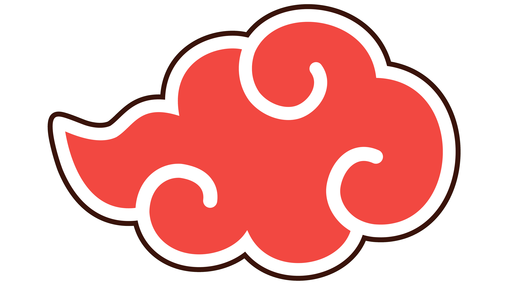

| Naziv | Rank | Specijalizacija | Kekkei Genkai | Poveznice | |
|---|---|---|---|---|---|
| Team 7 | Naruto Uzumaki | Genin | Ninjutsu, taijutsu | Lava release | Detalji |
| Sasuke Uchiha | Genin | Ninjutsu, taijutsu | Sharingan | Detalji | |
| Sakura Haruno | Genin | Liječenje | / | Detalji | |
| Kakashi Hatake | Jōnin | Ninjutsu, taijutsu | Sharingan | Detalji | |
| Team 6 | Shikamaru Naara | Genin | Ninjutsu, taktike | / | Detalji |
| Chouji Akimichi | Genin | Ninjutsu, taijutsu | / | Detalji | |
| Ino Yamanaka | Genin | Ninjutsu | / | Detalji | |
| Asuma Sarutobi | Jōnin | Ninjutsu, taijutsu | / | Detalji | |
| Team 8 | Kiba Inuzuka | Genin | Ninjutsu, taijutsu | / | Detalji |
| Shino Aburame | Genin | Ninjutsu | / | Detalji | |
| Hinata Hyūga | Genin | Ninjutsu, taijutsu | Byakugan | Detalji | |
| Kurenai Yūhi | Jōnin | Ninjutsu, genjutsu | / | Detalji | |
| Team 9 | Neji Hyūga | Genin | Ninjutsu, taijutsu | Byakugan | Detalji |
| Rock Lee | Genin | Taijutsu | / | Detalji | |
| Tenten | Genin | Taijutsu, oružja | / | Detalji | |
| Might Guy | Jōnin | Taijutsu | / | Detalji | |
| Čuvari sela | Hiruzen Sarutobi | Hokage | Ninjutsu, taijutsu | / | Detalji |
| Hayate Gekkō | Tokubetsu Jōnin | Kenjutsu | / | Detalji | |
| Ebisu | Tokubetsu Jōnin | Taijutsu | / | Detalji | |
| Kotetsu Hagane | Chūnin | Taijutsu | / | Detalji | |
| Izumo Kamizuki | Chūnin | Taijutsu | / | Detalji | |
| Konohamaru Sarutobi | Student | Ninjutsu | / | Detalji | |
| Selo pijeska | Gaara | Genin | Ninjutsu | Magnet release | Detalji |
| Temari | Genin | Ninjutsu | / | Detalji | |
| Kankuro | Genin | Lutke | / | Detalji | |
| Legendarni Sannini | Jiraiya | Kage level | Ninjutsu, taijutsu | / | Detalji |
| Tsunade | Hokage | Liječenje | / | Detalji | |
| Orochimaru | Kage level | Ninjutsu, taijutsu | Wood release | Detalji | |
| Selo zvuka | Kabuto Yakushi | Genin | Liječenje, taijutsu | / | Detalji |
| Sakon and Ukon | Izbjegli nindža | Ninjutsu, taijutsu | Molekuliziranje | Detalji | |
| Kidomaru | Izbjegli nindža | Ninjutsu, taijutsu | / | Detalji | |
| Jirōbō | Izbjegli nindža | Ninjutsu, taijutsu | / | Detalji | |
| Tayuya | Izbjegli nindža | Ninjutsu, taijutsu | / | Detalji | |
|  | Itachi Uchiha | Izbjegli nindža | Ninjutsu, genjutsu | Sharingan | Detalji |
| Kisame Hoshigaki | Izbjegli nindža | Ninjutsu, taijutsu | / | Detalji | Ova tablica uključuje likove iz originalnog Naruta, ne uključuje one iz Shippudena. |